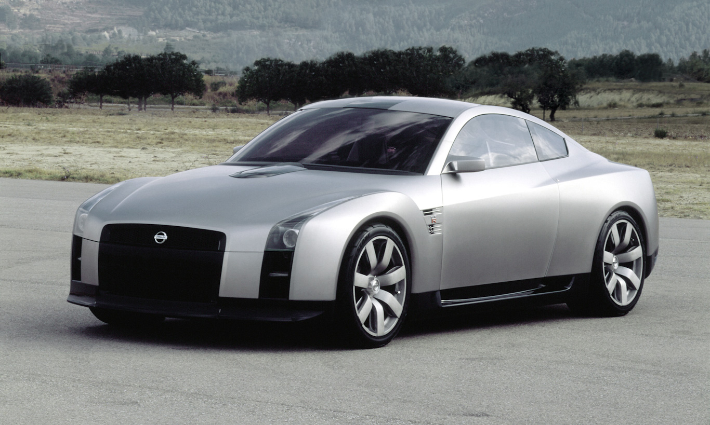

Sobre o Nissan Gtr
Nissan GT-R: reconhecido pelos fãs como Godzilla pela sua capacidade comprovada de encarar os mais poderosos adversários, o superesportivo agora vendido no Brasil marcou sua trajetória no cinema, nos games e especialmente no mundo real!
Nissan GT-R: um superesportivo com história
Há pouco tivemos a felicidade de noticiar que o GT-R será vendido em solo brasileiro.
De fato, falar do GT-R é uma enorme satisfação a nós que somos apaixonados por velocidade, e para a Nissan, o advento do superesportivo é sinônimo de sofisticação em todo seu padrão de atendimento no Brasil. A atual versão do GT-R 2017 é muito mais bela e aprimorada, e as melhorias acrescentaram mais 20 cavalos de potência (o super esportivo conta com 572 cavalos a 6.800 rpm), como podemos ver na notícia que balançou as estruturas nesse setembro de 2016.
A incrivel história do Nissan Gtr
Conhecido como Godzilla por ter se demonstrado imbativel perante outros carros esportivos de alto gabarito, não deixamos de dar atenção especial aos duelos e competições.
Nos games, o GT-R era uma das escolhas preferidas no jogo Need for Speed. Ele também esteve presente na saga de Velozes e Furiosos. A imagem célebre de Paul Walker e o Skyline são icônicas, uma referência que certamente marcou o início do novo milênio. Mas o GT-R tem suas origens que remontam mesmo ao final da década de 50. Sua história remonta aos anos dourados.
A história não começou na Nissan. Após o fim da Segunda Guerra Mundial, a empresa Tachikawa Aircraft mudava seu nome para Fuji Precision Industries e depois, em homenagem ao príncipe japonês Akihito (que veio a se tornar Imperador), para Prince Motor Company. Em 1957, surgia o carro de nome Prince Skyline, bem longe de ser o esportivo de hoje, mas um sedã de luxo para a época. Mas o conceito Skyline teve sua pré-história aí.
Em 1964, a Prince decidiu dar ao Skyline uma configuração mais esportiva, realizando alterações no motor e desempenho. Seu motor entregava 125 cavalos de potência em sua configuração top de linha. Sendo bem sucedido nas competições de GT Racing, o esportivo recebeu o nome de Skyline 2000 GT (S54). Quando o governo japonês decidiu que as empresas automotivas precisariam ser maiores para garantir o sucesso e a expansão no mercado estrangeiro, as fusões de marca e empresa aconteceram. A Prince Motor Company veio a se fundir com a Nissan, e o Skyline teve sua evolução continuada.
Esse é o primeriro de muitos projetos para chegarmos no Gtr R35.
Em outubro de 2001, a Nissan apresenta o GT-R concept no Salão de Tóquio. Nele as características esportivas eram ressaltadas, o que animou o púbico que não tinha aceitado as mudanças do Skyline V35, nas quais, por exemplo, faltavam as características clássicas, como as lanternas redondas na traseira, entre inúmeras outras. Em outubro de 2005, novamente no Salão de Tóquio, um protótipo vem trazer mais luz sobre a nova versão do superesportivo, agora em vias da concretização.
Com as características clássicas que lhe trouxe o nome de R35, porém altamente inovador, o Godzilla surge mais uma vez, sendo apresentado no Salão de Tóquio em 2007. A grande inovação certamente foi o motor V6 biturbo de 3,8 litros, com 3800 cc, capaz de entregar a potência de 492 cv a 6.400 rpm. O superesportivo então era capaz de chegar a 100 km/h em 3,2 segundos.

O GT-R nunca parou de evoluir. Em 2011, o R35 era atualizado com mudanças que elevaram sua potência para 537 cavalos. Na versão 2014, o GT-R passou a contar com 552 cavalos de potência.
Agora a nova versão do GT-R 2017 conta com 572 cavalos a 6800 rpm e chega ao Brasil. A análise do surgimento do GT-R desde seu passado mais remoto demonstra o caminho que a Nissan percorreu para inserir o Godzilla no mercado mundial. O GT-R se consagrou nos games, especialmente nas versões de Need for Speed, no cinema, com Velozes e Furiosos, infiltrando-se assim no desejo do público que almeja carros super esportivos.
Acertadamente, a Nissan escolheu como seu Diretor Global de Entusiasmo nada mais que Usain Bolt, o homem mais rápido do mundo, que mais uma vez angariou o ouro nas Olímpiadas, realizadas no Rio de Janeiro agora em 2016 (veja matéria). E agora é no país das Olímpiadas, que o novo GT-R é vendido por encomendas, e é atração confirmada no Salão Internacional do Automóvel, que ocorrerá entre 10 e 20 de novembro em São Paulo.
E a história não se acaba, continua mesmo agora diante de nossos olhares.